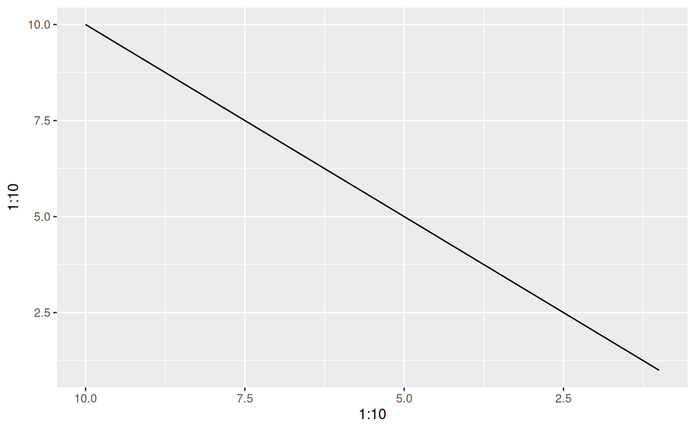

While the scales package export a reverse_trans object it does not allow for reversing of already transformed ranged - e.g. a reverse exp transformation is not possible. trans_reverser takes a trans object or something coercible to one and creates a reverse version of it.
Arguments
- trans
A trans object or an object that can be converted to one using
scales::as.trans()
Examples
# Lets make a plot
p <- ggplot() +
geom_line(aes(x = 1:10, y = 1:10))
# scales already have a reverse trans
p + scale_x_continuous(trans = 'reverse')

# But what if you wanted to reverse an already log transformed scale?
p + scale_x_continuous(trans = trans_reverser('log'))